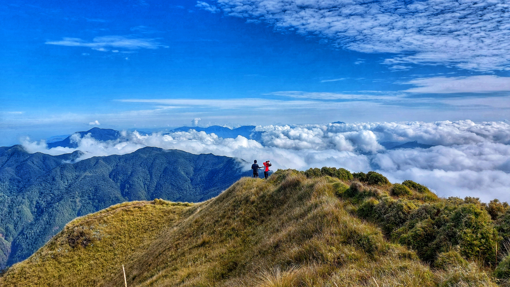
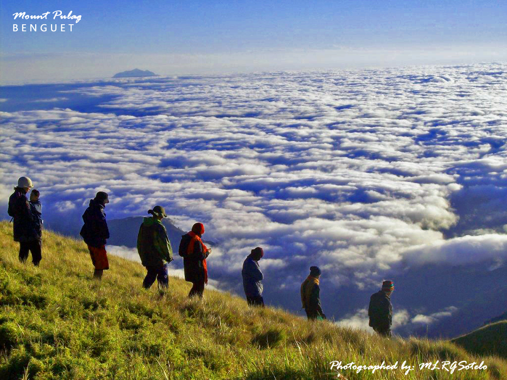

Mount Pulag
Mount Pulag is famous for its breathtaking sea of clouds and cool climate. It is one of the top hiking destinations in Benguet.



- Location: Kabayan,Benguet
- Best Time: November – February
- Tip: Bring warm clothes and arrive early